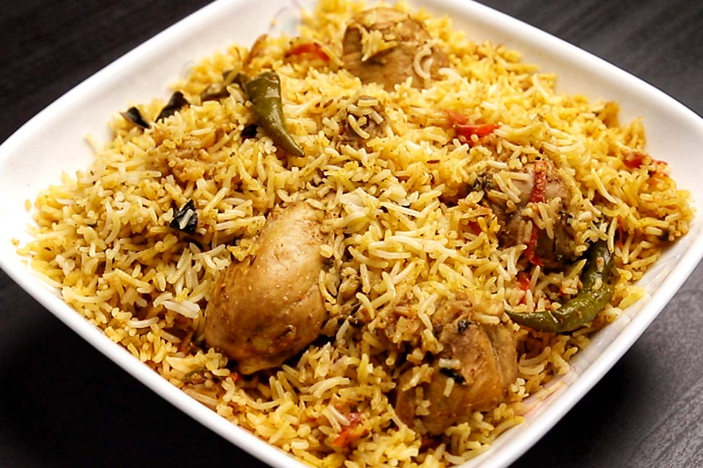

Chicken Biryani

Below is a basic recipe and step by step instructions to make Chicken Biryani.
Ingredients
- 300g basmati rice
- 25g butter
- 1 large onion, finely slices
- 1 bay leaf
- 3 cardamom pods
- small cinnamon stick
- 1 tsp turmeric
- 4 skinless chicken breasts, cut into large chunks
- 4 tbsp balti curry paste
- 85g raisins
- 850ml chicken stock
- 30g coriander,½ chopped, ½ leaves picked and 2 tbsp toasted flaked almonds, to serve
Steps
- Soak 300g basmati rice in warm water, then wash in cold until the water runs clear.
- Heat 25g butter in a saucepan and cook 1 finely sliced large onion with 1 bay leaf, 3 cardamom pods and 1 small cinnamon stick for 10 mins.
- Sprinkle in 1 tsp turmeric, then add 4 chicken breasts, cut into large chunks, and 4 tbsp curry paste. Cook until aromatic.
- Stir the rice into the pan with 85g raisins, then pour over 850ml chicken stock.
- Place a tight-fitting lid on the pan and bring to a hard boil, then lower the heat to a minimum and cook the rice for another 5 mins.
- Turn off the heat and leave for 10 mins. Stir well, mixing through 15g chopped coriander. To serve, scatter over the leaves of the remaining 15g coriander and 2 tbsp toasted almonds.
Go back to main page.